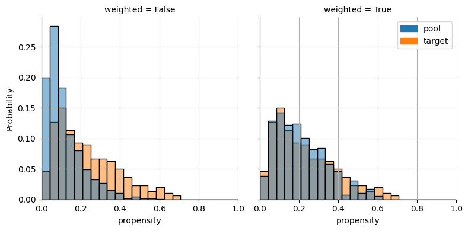
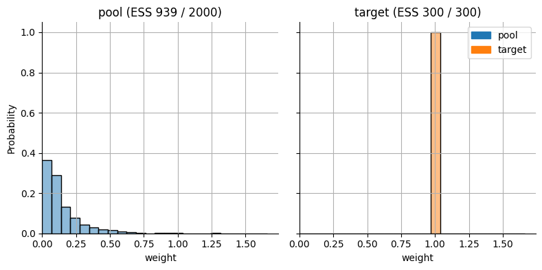
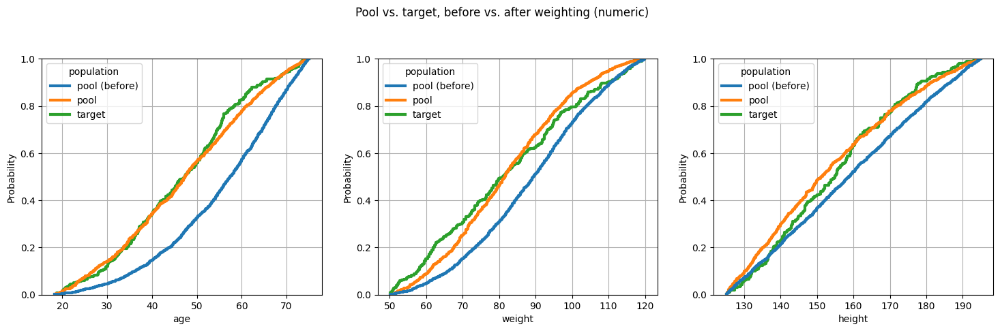
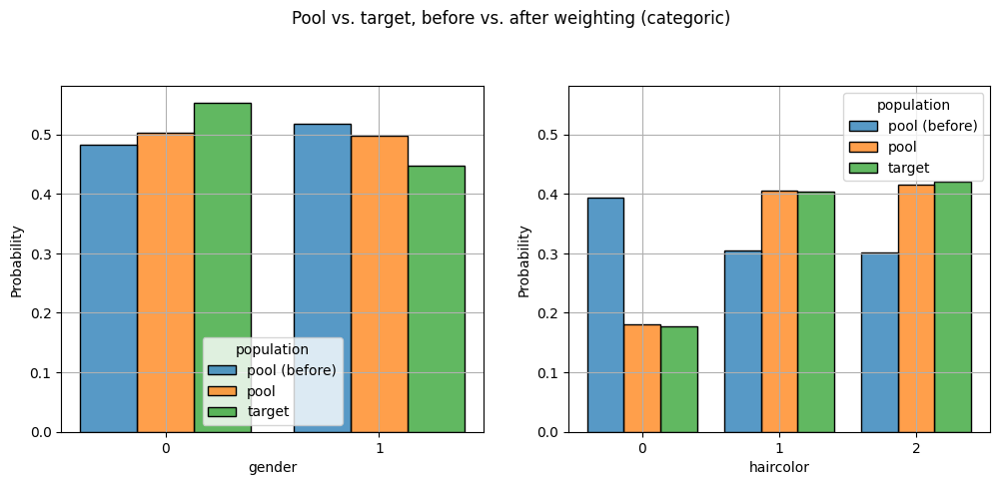
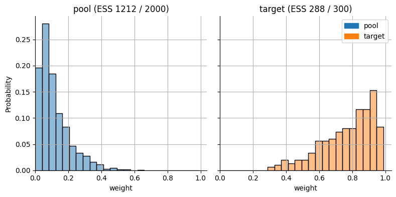
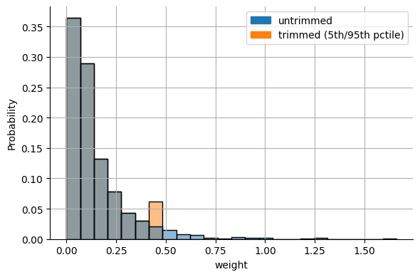

Propensity Score Weighting
Every matcher in pybalance (genetic, LP, propensity) works by selecting a subset of the pool. The weighters in pybalance.weighting instead reweight every pool patient, so nothing is dropped – some patients just count for more (or less) than others. Each weighter returns an ordinary MatchingData in which every pool row carries a fitted weight column.
PropensityScoreWeighter is the weighting counterpart of PropensityScoreMatcher. It reweights every pool patient (and, for some estimands, every target patient). Like the other weighters and matchers in pybalance, it is driven by a balance objective:
It searches randomly over the hyperparameters of a propensity model \(p(X) = P(\mathrm{target} \mid X)\) that classifies pool vs. target patients (the same search space as
PropensityScoreMatcher).Each candidate model’s propensity scores are mapped to weights by a
method– the weighting analogue of the matchingmethod(“greedy”, …).The weights are scored with the balance
objective(e.g."beta","gamma"), evaluated on the weighted pool and target, and the best-scoring model is kept.
|
pool weight |
target weight |
estimand |
|---|---|---|---|
|
\(p / (1 - p)\) |
\(1\) |
pool reweighted onto the target |
|
\(1\) |
\((1 - p) / p\) |
target reweighted onto the pool |
|
\(1 / (1 - p)\) |
\(1 / p\) |
both reweighted onto their union |
|
\(p\) |
\(1 - p\) |
population with the most covariate overlap (ATO) |
|
\(\min(p, 1-p) / (1 - p)\) |
\(\min(p, 1-p) / p\) |
smooth analogue of 1:1 matching |
Propensity score weighting requires a patient-level target (there is no pool-vs-target classification problem to fit against a published, aggregate-only Table 1) and does not guarantee exact balance on any moment. That is why the balance objective matters: it is what selects the propensity model.
[1]:
import logging
import matplotlib
import matplotlib.pyplot as plt
import pandas as pd
import seaborn as sns
from pybalance.sim import generate_toy_dataset
from pybalance.utils import MatchingData, MatchingHeaders
from pybalance.visualization import plot_categoric_features, plot_numeric_features
from pybalance.weighting import (
PropensityScoreWeighter,
effective_sample_size,
weighted_balance_table,
)
%matplotlib inline
# show the hyperparameter search and effective-sample-size diagnostics logged during match()
logging.basicConfig(level=logging.INFO, format="%(message)s", force=True)
Synthetic data: two genuinely different, patient-level populations
Propensity score weighting needs patient-level covariates on both sides so it can fit a pool-vs-target classifier. We use generate_toy_dataset’s pool and target populations directly, with no aggregation step.
[2]:
m = generate_toy_dataset(n_pool=2000, n_target=300, seed=11)
pool_df = m.get_population("pool").drop(columns=[m.population_col])
target_df = m.get_population("target").drop(columns=[m.population_col])
headers = MatchingHeaders(numeric=["age", "weight", "height"], categoric=["gender", "haircolor"])
matching_data = MatchingData(pool=pool_df, target=target_df, headers=headers)
matching_data.describe()
[2]:
| pool | target | ||
|---|---|---|---|
| population size | N | 2000.0000 | 300.000000 |
| gender | 0.0 | 0.4830 | 0.553333 |
| 1.0 | 0.5170 | 0.446667 | |
| haircolor | 0.0 | 0.3935 | 0.176667 |
| 1.0 | 0.3045 | 0.403333 | |
| 2 | 0.3020 | 0.420000 | |
| age | mean | 55.4200 | 46.710000 |
| std | 13.1500 | 13.720000 | |
| min | 18.2700 | 18.720000 | |
| q25 | 46.6200 | 36.290000 | |
| median | 57.4700 | 47.410000 | |
| q75 | 66.1700 | 55.930000 | |
| max | 74.9900 | 74.600000 | |
| weight | mean | 88.7000 | 82.100000 |
| std | 16.4400 | 19.110000 | |
| min | 50.2200 | 50.160000 | |
| q25 | 76.7700 | 65.520000 | |
| median | 89.4800 | 81.130000 | |
| q75 | 101.1000 | 96.190000 | |
| max | 119.9500 | 119.660000 | |
| height | mean | 159.0500 | 155.180000 |
| std | 19.5900 | 17.190000 | |
| min | 125.0400 | 125.160000 | |
| q25 | 142.1000 | 140.920000 | |
| median | 158.7400 | 154.890000 | |
| q75 | 175.3700 | 167.800000 | |
| max | 194.9500 | 194.230000 |
Weighting with PropensityScoreWeighter
As for the matchers, match() does the work: it searches for the best propensity model under the balance objective and returns a MatchingData in which every pool patient is retained and carries a new sample_weight column. Target patients carry their weight too (1 for "att"). Calling match() again reuses the result, and get_best_match() returns it without any computation.
weighted_balance_table() compares each feature’s target moment to the unweighted and weighted pool moment. Don’t expect the “weighted” column to land exactly on the target.
[3]:
weighter = PropensityScoreWeighter(matching_data, objective="beta", method="att", max_iter=20, seed=0)
matched = weighter.match()
weighted_balance_table(weighter)
Training model LogisticRegression (iter 1/20, 0.0 s) ...
Best propensity score weights found (att):
Model: LogisticRegression
* C: 71.55682161754872
* fit_intercept: True
* max_iter: 500
* penalty: l2
* solver: saga
Score (beta): 0.0280
Effective sample size: 939.3 / 2000 pool patients
Solution time: 0.0 s
Training model SGDClassifier (iter 2/20, 0.0 s) ...
Training model LogisticRegression (iter 3/20, 0.0 s) ...
Training model LogisticRegression (iter 4/20, 0.1 s) ...
Training model SGDClassifier (iter 5/20, 0.1 s) ...
Training model SGDClassifier (iter 6/20, 0.1 s) ...
Training model LogisticRegression (iter 7/20, 0.1 s) ...
Training model SGDClassifier (iter 8/20, 0.1 s) ...
Training model SGDClassifier (iter 9/20, 0.1 s) ...
Training model LogisticRegression (iter 10/20, 0.1 s) ...
Training model LogisticRegression (iter 11/20, 0.1 s) ...
Training model SGDClassifier (iter 12/20, 0.1 s) ...
Training model LogisticRegression (iter 13/20, 0.1 s) ...
Training model LogisticRegression (iter 14/20, 0.2 s) ...
Training model SGDClassifier (iter 15/20, 0.2 s) ...
Training model SGDClassifier (iter 16/20, 0.2 s) ...
Training model SGDClassifier (iter 17/20, 0.2 s) ...
Training model LogisticRegression (iter 18/20, 0.2 s) ...
Training model LogisticRegression (iter 19/20, 0.2 s) ...
Training model SGDClassifier (iter 20/20, 0.2 s) ...
[3]:
| feature | moment | target | unweighted_pool | weighted_pool | |
|---|---|---|---|---|---|
| 0 | gender_1.0 | mean | 0.446667 | 0.517000 | 0.497967 |
| 1 | haircolor_1 | mean | 0.403333 | 0.304500 | 0.404691 |
| 2 | haircolor_2 | mean | 0.420000 | 0.302000 | 0.414944 |
| 3 | age | mean | 46.705228 | 55.417328 | 47.289558 |
| 4 | weight | mean | 82.095249 | 88.704041 | 82.200213 |
| 5 | height | mean | 155.177503 | 159.050598 | 153.834747 |
[4]:
print(f"Effective sample size: {weighter.effective_sample_size():.1f} / {len(pool_df)} pool patients")
print(f"Best propensity model: {weighter.best_model}")
matched.get_population(matched.pool_name)["sample_weight"].describe()
Effective sample size: 939.3 / 2000 pool patients
Best propensity model: LogisticRegression(C=71.55682161754872, max_iter=500, random_state=0,
solver='saga')
[4]:
count 2000.000000
mean 0.146661
std 0.155889
min 0.006793
25% 0.051963
50% 0.094249
75% 0.184285
max 1.660323
Name: sample_weight, dtype: float64
Effective sample size
Optimizing balance alone could favor weights that rest on a handful of patients. The effective sample size (ESS, Kish’s \((\sum w)^2 / \sum w^2\)) measures how many equally weighted patients the weights are worth. PropensityScoreWeighter therefore rejects any candidate model whose pool or target ESS falls below min_ess_fraction (default 0.1) of the population size, and only the remaining candidates compete on balance.
The ESS equals the population size when all weights are equal and shrinks towards 1 as the total weight concentrates on fewer patients. A large drop from the raw pool size is the standard red flag that the reweighting relies on a small, possibly unrepresentative, slice of the pool, so it is worth reporting alongside any weighted result.
Checking overlap: propensity score and weight distributions
Propensity score weighting relies on positivity: every pool patient needs a realistic chance of looking like the target on the fitted model. A propensity score distribution piled up near 0 or 1, or a handful of huge weights, is the practical warning sign – the same concern the ESS summarizes in one number.
plot_propensity_score_distributions() is the weighting counterpart to PropensityScoreMatcher.plot_propensity_score_distributions(): instead of a matched subset’s “before” vs. “after” panels, it shows the same pool/target propensity scores counted equally (“before”) vs. counted by their fitted weight (“after”). plot_weight_distributions() plots the weights themselves, with the effective sample size of each population in its panel title.
[5]:
weighter.plot_propensity_score_distributions();

[6]:
weighter.plot_weight_distributions();

To see the effect on the covariates themselves, put the unweighted pool, the weighted pool and the target into a single MatchingData – the same trick the matching demos use to show “pool (prematch)” alongside “pool” and “target” – and pass weights= through to plot_numeric_features/plot_categoric_features. The unweighted pool copy gets weight 1, so a single call draws all three distributions together.
[7]:
before_pool = matching_data.get_population(matching_data.pool_name).copy()
before_pool[weighter.weight_col] = 1.0
combined = matched.copy()
combined.append(before_pool, name="pool (before)")
hue_order = ["pool (before)", matching_data.pool_name, matching_data.target_name]
plot_numeric_features(
combined, weights=weighter.weight_col, hue_order=hue_order, include_only=headers.numeric, col_wrap=3
)
plt.suptitle("Pool vs. target, before vs. after weighting (numeric)", y=1.05);

[8]:
plot_categoric_features(
combined, weights=weighter.weight_col, hue_order=hue_order, include_only=headers.categoric, col_wrap=2
)
plt.suptitle("Pool vs. target, before vs. after weighting (categoric)", y=1.05);

Choosing a method: overlap weights
Different estimands trade fidelity to the target against stability. Overlap weights (Li, Morgan & Zaslavsky, 2018) weight each patient by the probability of belonging to the other population, so patients who could plausibly belong to either population are emphasized and those who clearly belong to just one are smoothly down-weighted. Weights are bounded in \([0, 1]\), so extreme weights cannot occur, at the price of targeting the overlap population rather than the target itself. Both
populations are reweighted, so weighted_balance_table() compares the weighted pool to the weighted target.
Changing method is all it takes.
[9]:
overlap = PropensityScoreWeighter(matching_data, objective="beta", method="overlap", max_iter=20, seed=0)
overlap_matched = overlap.match()
weighted_balance_table(overlap)
Training model LogisticRegression (iter 1/20, 0.0 s) ...
Best propensity score weights found (overlap):
Model: LogisticRegression
* C: 71.55682161754872
* fit_intercept: True
* max_iter: 500
* penalty: l2
* solver: saga
Score (beta): 0.0000
Effective sample size: 1211.9 / 2000 pool patients
Solution time: 0.0 s
Training model SGDClassifier (iter 2/20, 0.0 s) ...
Training model LogisticRegression (iter 3/20, 0.0 s) ...
Training model LogisticRegression (iter 4/20, 0.0 s) ...
Training model SGDClassifier (iter 5/20, 0.1 s) ...
Training model SGDClassifier (iter 6/20, 0.1 s) ...
Training model LogisticRegression (iter 7/20, 0.1 s) ...
Training model SGDClassifier (iter 8/20, 0.1 s) ...
Training model SGDClassifier (iter 9/20, 0.1 s) ...
Training model LogisticRegression (iter 10/20, 0.1 s) ...
Training model LogisticRegression (iter 11/20, 0.1 s) ...
Training model SGDClassifier (iter 12/20, 0.1 s) ...
Training model LogisticRegression (iter 13/20, 0.1 s) ...
Training model LogisticRegression (iter 14/20, 0.1 s) ...
Training model SGDClassifier (iter 15/20, 0.2 s) ...
Training model SGDClassifier (iter 16/20, 0.2 s) ...
Training model SGDClassifier (iter 17/20, 0.2 s) ...
Training model LogisticRegression (iter 18/20, 0.2 s) ...
Training model LogisticRegression (iter 19/20, 0.2 s) ...
Training model SGDClassifier (iter 20/20, 0.2 s) ...
[9]:
| feature | moment | target | unweighted_pool | weighted_pool | |
|---|---|---|---|---|---|
| 0 | gender_1.0 | mean | 0.500954 | 0.517000 | 0.500941 |
| 1 | haircolor_1 | mean | 0.391011 | 0.304500 | 0.391003 |
| 2 | haircolor_2 | mean | 0.403530 | 0.302000 | 0.403523 |
| 3 | age | mean | 48.897809 | 55.417328 | 48.898310 |
| 4 | weight | mean | 83.289065 | 88.704041 | 83.289283 |
| 5 | height | mean | 154.607092 | 159.050598 | 154.607253 |
[10]:
overlap.plot_propensity_score_distributions();
overlap.plot_weight_distributions();

Reusing the propensity model: match(method=...)
The hyperparameter search is the expensive step, while a fitted propensity model can be mapped to any estimand cheaply. match(method) (and get_weights(method), score(method), weighted_balance_table(weighter, method) and the plot function) apply a different method to the fitted model without searching again and without changing the weighter. Keep in mind that the model was selected to optimize the balance of the method given at construction, so matching afresh with the method you
intend to use (as above) is the more principled choice. Passing method is convenient for comparing estimands on the same model.
[11]:
rows = []
for method in ["att", "atc", "ate", "overlap", "matching"]:
w_pool = weighter.get_weights(method)
rows.append(
{
"method": method,
"balance (beta distance)": weighter.score(method),
"pool ESS": effective_sample_size(w_pool),
"target ESS": effective_sample_size(weighter.get_target_weights(method)),
"max pool weight / mean": w_pool.max() / w_pool.mean(),
}
)
pd.DataFrame(rows).set_index("method").round(3)
[11]:
| balance (beta distance) | pool ESS | target ESS | max pool weight / mean | |
|---|---|---|---|---|
| method | ||||
| att | 0.028 | 939.305 | 300.000 | 11.321 |
| atc | 0.113 | 2000.000 | 117.027 | 1.000 |
| ate | 0.096 | 1963.723 | 136.098 | 2.320 |
| overlap | 0.000 | 1211.869 | 288.163 | 5.401 |
| matching | 0.021 | 972.418 | 297.920 | 6.859 |
Trimming extreme weights
The main practical failure mode of IPTW-style weights ("att", "atc", "ate") is a small number of extreme weights, driven by patients whose covariates make the model almost certain they belong to one population. trim_quantiles=(low, high) clips each population’s weights at the given quantiles before they are scored – a standard bias/variance trade-off: a little exact balance is sacrificed in exchange for much more stable, lower-variance weights.
[12]:
trimmed = PropensityScoreWeighter(
matching_data, objective="beta", method="att", trim_quantiles=(0.05, 0.95), max_iter=20, seed=0
)
trimmed.match()
print(f"Untrimmed: ESS={weighter.effective_sample_size():.1f}, max weight={weighter.weights.max():.2f}")
print(f"Trimmed: ESS={trimmed.effective_sample_size():.1f}, max weight={trimmed.weights.max():.2f}, n_trimmed={trimmed.diagnostics['n_trimmed']}")
labels = ["untrimmed", "trimmed (5th/95th pctile)"]
data = pd.concat(
[
pd.DataFrame({"weight": weighter.weights, "weights": labels[0]}),
pd.DataFrame({"weight": trimmed.weights, "weights": labels[1]}),
]
)
g = sns.FacetGrid(data=data, height=4, aspect=1.5)
g.map_dataframe(
sns.histplot,
bins=24,
binrange=(0, data["weight"].max()),
x="weight",
hue="weights",
hue_order=labels,
alpha=0.5,
common_norm=False,
stat="probability",
)
g.ax.grid(True)
plt.legend(
handles=[
matplotlib.patches.Patch(color=sns.color_palette()[i], label=label)
for i, label in enumerate(labels)
]
);
Training model LogisticRegression (iter 1/20, 0.0 s) ...
Best propensity score weights found (att):
Model: LogisticRegression
* C: 71.55682161754872
* fit_intercept: True
* max_iter: 500
* penalty: l2
* solver: saga
Score (beta): 0.0438
Effective sample size: 1142.3 / 2000 pool patients
Solution time: 0.0 s
Training model SGDClassifier (iter 2/20, 0.0 s) ...
Training model LogisticRegression (iter 3/20, 0.0 s) ...
Training model LogisticRegression (iter 4/20, 0.0 s) ...
Training model SGDClassifier (iter 5/20, 0.1 s) ...
Training model SGDClassifier (iter 6/20, 0.1 s) ...
Training model LogisticRegression (iter 7/20, 0.1 s) ...
Training model SGDClassifier (iter 8/20, 0.1 s) ...
Training model SGDClassifier (iter 9/20, 0.1 s) ...
Training model LogisticRegression (iter 10/20, 0.1 s) ...
Training model LogisticRegression (iter 11/20, 0.1 s) ...
Training model SGDClassifier (iter 12/20, 0.1 s) ...
Training model LogisticRegression (iter 13/20, 0.1 s) ...
Training model LogisticRegression (iter 14/20, 0.2 s) ...
Training model SGDClassifier (iter 15/20, 0.2 s) ...
Training model SGDClassifier (iter 16/20, 0.2 s) ...
Training model SGDClassifier (iter 17/20, 0.2 s) ...
Training model LogisticRegression (iter 18/20, 0.2 s) ...
Training model LogisticRegression (iter 19/20, 0.2 s) ...
Training model SGDClassifier (iter 20/20, 0.2 s) ...
Untrimmed: ESS=939.3, max weight=1.66
Trimmed: ESS=1142.3, max weight=0.46, n_trimmed=200

Takeaways
Weighting keeps every pool patient, unlike the subset-selection matchers – some patients just count for more or less.
PropensityScoreWeighterfollows the same philosophy as the matchers: a balanceobjectiveguides decisions, including the propensity model’s hyperparameters, andmethodselects how propensity scores become weights.methodis the estimand:"att"(IPTW),"atc","ate","overlap"or"matching". Methods that also reweight the target (all but"att") return target weights, whichweighted_balance_table()takes into account.It requires a patient-level target – there’s no aggregate-only (“published Table 1”) variant. Use
MAICWeighterorEntropyBalanceWeighterfor that.It does not solve for exact balance, so check
weighted_balance_table()andeffective_sample_size()on the fitted result.min_ess_fractionkeeps the search from buying balance with a handful of dominant patients.trim_quantilescaps extreme weights, andmatch(method=...)compares estimands on a fitted propensity model without searching again.